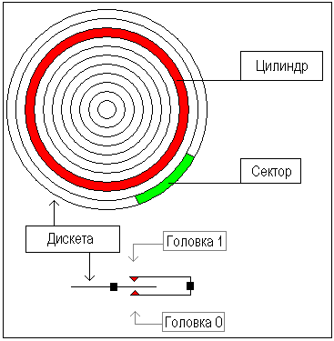

TEXT SCRAMBLING in TRIAL VERSION OUTPUT! In evaluation mode, Help+Manual will scramble individual characters in random words in your published output files. This is a limitation of the free trial version. This help system was created with an evaluation copy of Help+Manual.
Уроки Ассемблера 8086 для начинающих (Часть 11)
Создание вашей собственной операционной системы
Перевод: Поляков А.В. http://www.avprog.narod.ru
Обычно, когда компьютер стартует, он пытается загрузиться с первого 512-байтового сектора (это Цилиндр 0, Головка 0, Сектор 1) дискеты в дисководе A: в память по адресу 0000h:7C00h и передать ей управление. Если это не удается, то BIOS пытается использовать MBR первого жесткого диска.
Этот урок посвящен загрузке с дискеты. Те же принципы используются при загрузке с жесткого диска. Но использование дискеты имеет несколько преимуществ: •Вы можете сохранить существующую операционную систему неповрежденной (Windows, DOS...).
•Загрузочную запись дискеты легко модифицировать.
Пример простой загрузочной программы для дискеты:
Скопируйте описанный выше пример в редактор исходного кода Emu8086 и нажмите кнопку [Compile and Emulate]. Эмулятор автоматически загрузит ".boot" файл по адресу 0000h:7C00h.
Вы можете управлять им как обычной программой или использовать меню Virtual Drive -> Write 512 bytes at 7C00h to -> Boot Sector виртуального дисковода (файл FLOPPY_0 в каталоге, где установлен эмулятор). После записи вашей программы в Виртуальный Дисковод, вы можете выбрать Boot from Floppy из меню Virtual Drive.
Из любопытства вы можете записать виртуальную дискету (FLOPPY_0) или ".boot"-файл на реальную дискету и загрузить с нее ваш компьютер. Я рекомендую использовать "RawWrite for Windows" из: http://uranus.it.swin.edu.au/~jn/linux/rawwrite.htm (с недавнего времени работает под всеми версиями Windows!)
Примечание: Этот .boot-файл не совместим с загрузочным сектором MS-DOS (будет невозможно прочитать или записать данные на вашу дискету, пока вы ее снова не отформатируете). Фактичеки, если вы используете какие-либо "сырые" программы, такие как описанная выше, они так или иначе будут стирать все данные. Так что убедитесь, что ваша дискета не содержит важных данных.
".boot"-файлы имеют ограничение 512 байтов (размер сектора). Если ваша операционная система имеет размер, превышающий это ограничение, то вам придется использовать программу для загрузки из других секторов. Хороший пример маленькой операционной системы можно найти в каталоге "Samples":
Для создания расширенной операционной системы (более 512 байтов), вы можете использовать файлы ".bin" (выберите "BIN Template" из меню "File" -> "New").
Чтобы записать файл ".bin" на виртуальный дисковод, выберите "Write .bin file to floppy..." из меню эмулятора "Virtual Drive":
Вы можете также использовать для записи ".boot"-файлов.
Упрощенный дисковод и структура дискеты:
 Для дискеты на 1440 КБ: •Дисковод имеет 2 стороны и 2 головки - по одной на каждую сторону (0..1). Головки дисковода перемещаются над поверхностью диска на каждой стороне.
•Каждая сторона имеет 80 цилиндров (нумерация 0..79).
•Каждый цилиндр имеет 18 секторов (1..18).
•В каждом секторе 512 байтов.
•Общий размер дискеты: 2 x 80 x 18 x 512 = 1474560 байтов.
Чтобы прочитать секторы с дискеты, используйте INT 13h / AH = 02h.
<<< Предыдущая часть <<< >>> Следующая часть >>>
|